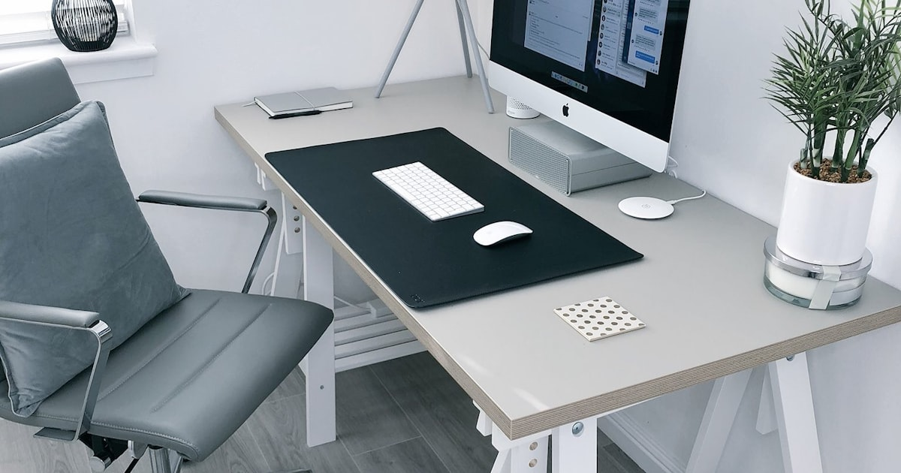

Minimalistisches Schreibtisch-Setup für mehr Fokus

Foto: Unsplash
Ein voller Schreibtisch ist nicht nur unordentlich – visuelles Chaos im Blickfeld kostet Aufmerksamkeit, die eigentlich für die Arbeit gebraucht wird. Ein minimalistisches Setup ist deshalb mehr als Ästhetik: Es ist ein einfacher Hebel für mehr Fokus im Arbeitsalltag.
Das Prinzip: Nur was täglich gebraucht wird, bleibt sichtbar
Alles, was nicht täglich genutzt wird, gehört in eine Schublade oder ein Regal außerhalb des direkten Blickfelds – nicht weggeworfen, nur außer Sichtweite. Der Unterschied zwischen "wenig besitzen" und "wenig sehen" ist dabei entscheidend: Minimalismus am Arbeitsplatz bedeutet nicht Verzicht, sondern bewusste Auswahl dessen, was im Sichtfeld bleibt.
Monitor-Ständer mit Ablage
Ein Monitor-Ständer hebt den Bildschirm auf Augenhöhe und schafft gleichzeitig Stauraum darunter für Tastatur, Notizblock oder Kabel – die Tischfläche bleibt frei, ohne dass Dinge komplett verschwinden müssen. Das ist oft der einfachste erste Schritt, weil er sofort Fläche gewinnt, ohne dass du etwas wegräumen musst.
Monitor-Ständer mit Ablage bei Amazon ansehen** Affiliate-Link
Eine Farbe, ein Material
Visuelle Ruhe entsteht auch durch Konsistenz: Wenn Laptop-Ständer, Kabelmanagement und Ablageflächen eine ähnliche Farbwelt teilen (etwa Holz oder Schwarz/Weiß), wirkt der Schreibtisch aufgeräumter, selbst wenn objektiv gleich viele Gegenstände darauf stehen. Ein praktischer Ansatz: Beim nächsten Kauf eines Zubehörteils bewusst auf die vorhandene Farbwelt achten, statt nach Einzelangebot zu entscheiden.
Kabelmanagement nicht vergessen
Selbst der aufgeräumteste Schreibtisch wirkt chaotisch, wenn Kabel lose herunterhängen oder sich auf der Fläche kreuzen. Kabelkanäle, ein Kabelkorb unter der Tischplatte oder simple Klettbänder bündeln Ladekabel und Verbindungen aus dem Sichtfeld. Wichtig ist weniger das konkrete Produkt als das Prinzip: Kabel gehören gebündelt und aus der Sichtachse, nicht einzeln über die Platte verteilt.
Die 3-Gegenstände-Regel
Ein einfacher Test: Wenn mehr als drei Gegenstände außerhalb von Laptop/Monitor und Tastatur auf der sichtbaren Fläche stehen, ist es Zeit, etwas wegzuräumen oder eine Ablagelösung zu finden. Die Regel ist bewusst grob – sie funktioniert als Faustregel, nicht als starres Limit, und hilft vor allem dabei, eine Gewohnheit des täglichen Aufräumens zu etablieren.
Checkliste: Minimalistisches Setup einrichten
- Fläche leeren: alles vom Tisch nehmen und nur das zurückstellen, was täglich gebraucht wird
- Vertikalen Raum nutzen: Monitor-Ständer oder Regal statt zusätzlicher Tischfläche
- Kabel bündeln: Kabelkanal, Klettband oder Kabelkorb einsetzen, bevor neue Geräte dazukommen
- Farbwelt festlegen: neue Zubehörteile an vorhandene Materialien/Farben anpassen
- Wöchentlicher Reset: feste kurze Routine, um sich ansammelnde Kleinteile wieder wegzuräumen
Fazit
Minimalismus am Schreibtisch bedeutet nicht, mit möglichst wenig auszukommen, sondern bewusst zu entscheiden, was im Blickfeld bleibt. Ein Monitor-Ständer schafft Fläche, ein gebündeltes Kabelmanagement nimmt visuelle Unruhe, und eine einheitliche Farbwelt sorgt für Ordnung auch bei gleichbleibender Gegenstandszahl. Das Ergebnis ist ein Arbeitsplatz, der weniger vom eigentlichen Arbeiten ablenkt.
Häufige Fragen
Ist ein minimalistisches Setup wirklich produktiver?
Ein aufgeräumtes Blickfeld reduziert visuelle Reize, die um Aufmerksamkeit konkurrieren. Ob sich das für dich in Produktivität übersetzt, hängt von der Arbeit ab – bei konzentrationsintensiven Aufgaben hilft es tendenziell mehr als bei kreativer, materialintensiver Arbeit.
Muss ich alles wegräumen, was ich nicht täglich brauche?
Nein. Minimalismus am Schreibtisch heißt nicht, wenig zu besitzen, sondern bewusst zu wählen, was sichtbar bleibt. Selten genutzte Dinge dürfen in Schublade oder Regal – sie müssen nur aus dem direkten Blickfeld verschwinden.
Wie fange ich an, wenn mein Schreibtisch schon vollgestellt ist?
Räume den Tisch komplett leer und stelle nur das zurück, was du täglich wirklich benutzt. Alles andere wandert probeweise in eine Kiste außer Sichtweite – was du nach zwei Wochen nicht vermisst hast, braucht dauerhaft keinen Platz auf der Fläche.